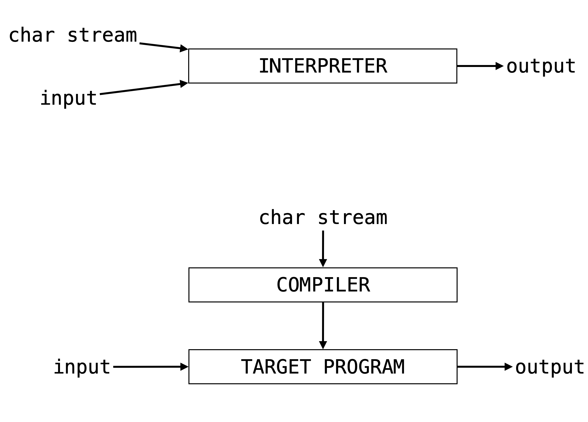
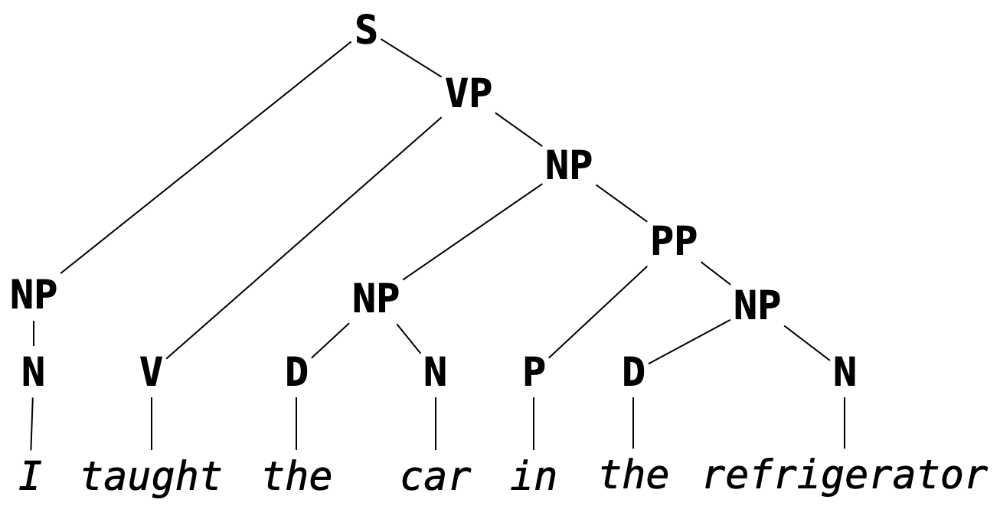
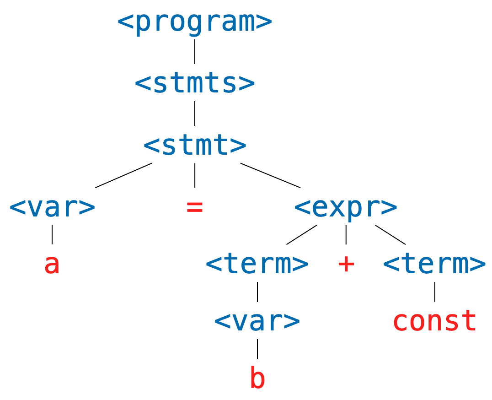

Preface
These are notes for the course CAS CS 320: Principles of Programming Languages (Spring 2024) taught at Boston University. They are based on material created by several members of the Principles of Programming and Verification (POPV) group, perhaps most notably Marco Gaboardi and Hongwei Xi.
CS 320 has recently been taught in two parts. The first part is on the basics of OCaml, using the now mainstay text OCaml Programming: Correct + Efficient + Beautiful by Michael R. Clarkson. During the second part, students learn the fundamentals necessary to build a stack-based interpreter. This part of the course has no accompanying text, in part because material on the topic tends to go into either too much or too little detail. These notes attempt to fill this gap, to give students a reference for the second half of the course.
This year (Spring 2024) is the first year we are using these notes. This is to say: they are incredibly incredibly rough. There are likely rife with typos, humorous misspellings and grammatical errors, poorly written sections, missing explanations, and the like. To students: we appreciate your (assumed) patience. To everyone: any comments are welcome. If you spot a error, you are encouraged to post an issue to the associated GitHub repository.
These notes are generated using mdbook.
Introduction
When we go to write a program in our favorite programming language (OCaml, I presume) we fill a file with a bunch of symbols and text. This is one of the beauties of programming: looking past the bells and whistles provided by editors and IDEs, a program is just a stream of characters.
At some point in our programming workflow (hopefully not the very end) we want to verify that what we've written thus far actually works, so we run our program. In some IDEs, this literally means pressing a play button. For more down-to-earth setups, this might mean opening up a terminal and typing out a few commands.
In either case, we are running a different program in order to run the program we've written (huh). Our goal is to understand what's going on here: What is this program doing? How does it do it? What sorts of data structures does this program use? etc., etc.
Our intuition should probably tell us this program is doing something fairly complicated. Just imagine how hard it is for us as humans (and, more specifically, students) to follow directions. How often do we find ourselves wishing we had read all the instructions before starting on some task (like we we're told to do)?
So, our basic question: How do we get from that stream of symbols to the output of our program?
Interpretation vs. Compilation
We start by making a loose but ultimately important distinction, that of interpretation versus compilation. At the risk of oversimplicating the issue, we will use the following definitions to distinguish between these two processes.
Interpretation is the process of of taking a source program and its input, and then running it immediately to get its output.
In the case of compilation we're not immediately interested in the output of our program, but rather punt that concern to a different process.
Compilation is the process of taking a source program in a high-level language and then translating it into a program in a low-level language which can given input and run separately.
These processes are often represented by the following ubiquitous (verging on patronizingly) simple diagrams.

Again, this is a loose distinction, e.g., there may be intermediate translations in the process of intepretation. We will look briefly at compilation towards the end of the course, but we start by focusing on interpretation.
Pure Interpretation Pipeline
So, what's happening inside an interpreter? We start (as is typically the case) with a high-level diagram. We can think of this image as providing a window into the "Interpreter" box above.

A lot to parse here (pun intended), but this also gives us an outline of what is to come in the remainder of these notes:
-
The first two boxes turn that sequences of characters we've written into something that is easy to evaluate, easy to "run". This part of intepretation is about the form (or syntax) of the program. We use Formal Grammars (Chapter 2) to represent this form, i.e., to describe the result of Parsing (Chapter 3). Just like natural language, programming languages are heirarchical, and representing that heirarchical structure explicitly will make it easier to evaluate the program.
-
The next two boxes take the heirarchical structure gotten by analyzing the syntax of our program, and then evaluate it (run it) to get its output (possibly building an intermediate representation). This part of intperetation is about the meaning (or semantics) of the program. We use Formal Semantics (Chapter 4) to describe what it means to give a program this meaning. This is where we need to concern ourselves with how Variables (Chapter 5) are handled and how function calls are made (i.e., how Subprograms (Chapter 6) are run).
As we will see, some of these steps are skipped (with parser combinators, it is often possible to perform lexical analysis alongside parsing) or added to (by the end of the course, we will include a compilation step as part of semantic analysis). The hope is just that we are starting to think more carefully about what is going on when our programs are run.
What's Next
Programming languages form is one of these topics that has incredibly deep implication both in theory and in practice. It will be important to us not just to think about how to implement an interpreter, but also about the underlying logical frameworks we need for programming languages to make sense.
So there will be a frequent give-and-take here between theory and practice. Be prepared to do handwritten assignments (not quite proofs, but something akin to them) as well as programming assignments (i.e., building the components interpreter).
We begin with the study of Formal Grammar, the basis of parsing (and also of theoretical linguistics).
Formal Grammar
Most of us are likely familiar with grammar in the context of natural language. In a primary school English class, we might learn that we should use the artical "an" instead of "a" if its corresponding noun starts with a vowel sound, or that what follows a semicolon should be a independent clause (i.e., should be able to stand on its own as a complete sentences). These are examples of English grammar rules.
Grammar, in broad strokes, refers to the rules which govern what constitutes a well-formed sentence in a given language, barring low-level syntactic concerns like spelling or white space. It is the concern of grammar to determine that
I taught the car in the refrigerator
makes grammatical sense and that
I car teach refrigerator in there
does not. It is not the concern of grammar to determine that the first sentence, though grammatical, has no reasonable interpretation in English (except, perhaps, in surrealist fiction).
Programming languages─being themselves languages in their own right, albeit more stringent ones than natural languages─have their own grammars, i.e., rules for determining what counts as a well-formed program. Due to the grammatic precision expected of programming languages (we don't want too much variation in what we are allowed to write as a valid program), these tend to be called formal grammars.
Example. In OCaml, the program
let f x = x + 1is well-formed, but the program
let f x = x 1 +is not, because the rule for using the
+operator is that its arguments appear to its left and its right. That is, it is an infix operator (it can be used as a prefix operator if put in parentheses, e.g.(+) x 1, but it cannot in any circumstances be used as a postfix operator). We will discuss fixity in more detail later.
As in the case of natural language, grammars for programming languages are not concerned with the meaning of programs, just their well-formedness. The program
let omega x = x x
is well-formed in OCaml, but it does not type-check since the argument x is expected to be a function of type 'a -> 'b as well as an argument of type 'a, an impossibility in the type system of OCaml.
If our goal is to interpret computer programs, then we have to understand formally─both theoretically and practically─the grammars describing the well-formed programs in those languages. This means being able to represent and interpret representations of formal grammars. The grammar of OCaml, for example, is given in its entirety in The OCaml Manual. After going through this chapter, you should be able to intepret the specification given there.
Placing this in the pipeline of interpretation we discussed in the previous chapter, grammar is used to represent the output of parsing (which we will take up in the following chapter). As a reminder, a stream of tokens is parsed into a parse tree, a hierarchical structure which describes the way the program is formally composed. As we mentioned before (and as we will come to later understand) it is easier to determine the meaning of a program (i.e., to interpret it) given its hierarchical structure as opposed to its linear form as a stream of tokens.
Remark. This is another way of conceptualizing the role of grammar: it determines the hierarchical structure of a sentence. A sentence may be considered well-formed if it can constructed as well-formed parse tree, e.g.

Its not important that you know/remember exactly what you each of the abbreviations in the above image stand for (this is not a linguistics course or an English grammar course) but hopefully the structure aligns with your intuition about how words in the sentences are grouped.
Chapter Summary
In what follows, we will:
- define Backus-Naur Form specifications, a way of describing so-called context-free grammars, which we will use to present the grammars of programming languages;
- discuss ambiguity in grammar along with how to avoid it (and why);
- take a brief detour to talk about regular grammars and regular expressions.
Backus-Naur Form
Backus-Naur Form (BNF) specifications are used to describe what are called context-free grammars. Context-free grammars form a class of formal grammars which are sufficiently expressive to capture the grammars of most programming languages. We will be using BNF specifications to describe the rules which determine well-formed programs in programming languages we aim to interpret.
First, a toy example/thought experiment. Consider again the following English statement.
the cow jumped over the moon
Suppose we tried to break down the cognitive process of determining that this sentence is grammatical. We might first recognize that each word falls into a particular part of speech. We can represent this step of the process by replacing each word in the sentence with a symbol standing for each figure of speech (the choice of symbol being influenced by what is to come).
<article> <noun> <verb> <prep> <article> <noun>
We then might recognize some familiar patterns: <article> <noun> captures the determination or quantification of an object, so we might mentally group these symbols (into what grammaticists call nominal phrases or noun phrases) and represent them by a new symbol:
<noun-phrase> <verb> <prep> <noun-phrase>
Then we might recognize that a preposition followed by a noun phrase is also single unit ("over the moon", "through the woods", and "behind the wall" are examples of prepositional phrases) so that the structure of the entire sentence may be represented as
<noun-phrase> <verb> <prep-phrase>
Then we might recognize that prepositional phrases can modify verbs, again creating a single unit (e.g., "ran to the car", "arose from bed") leaving us with something like
<noun-phrase> <verb-phrase>
which we should finally recognize the canonical structure of a well-formed sentence: a thing does a thing. A bit hand-wavy, but hopefully we can see that this accounts roughly for what we do when we judge that the above sentence is grammatical.
Putting these steps in reverse order (and starting with a single symbol <sentence>, for reasons we will see below) we get something that looks like a proof or evidence that the cow jumped over the moon is a grammatical sentence.
<sentence>
<noun phrase> <verb phrase>
<noun phrase> <verb> <prep phrase>
<noun phrase> <verb> <prep> <noun phrase>
<article> <noun> <verb> <prep> <article> <noun>
the cow jumped over the moon
That is, a representation of our congnitive process. And if we squint, we can see something that hiearchical, something that looks a bit like the parse tree in the introduction to this chapter.

A formal grammar is meant to model this cognitive process of classifying a sentence as grammatical by verifying that it has the "right" hierarchical structure.
Definitions
In defining a formal grammar, we have to fix ourselves to a collection of symbols.
These symbols are divided into two disjoint groups: the terminal symbols and the non-terminal symbols.
In what follows (and as above) we will always notate a non-terminal symbol by something of the form <non-term> (where we replace non-term with something more descriptive) and terminal symbols by sequence of (typically) alphanumeric symbols.
Remark. We almost never state outright what the underlying symbols of a grammar are. It should always be possible to determine what terminal and non-terminal symbols we are considering by looking at the BNF specification itself.
In the "proof" that we gave that the cow jumped over the moon was grammatical, we built a sequence of not-quite sentences, until the very last one which was an actual sentences. We call these not-quite sentences sentential forms.
Definition. A sentential form is a sequence of symbols (terminal or non-terminal). A sentence is a sequence of terminal symbols.
We notate a sequences of symbols by white space separation.
For example, the dog jumped is a sentence and the <noun> jumped is a sentential form.
But it is important to note that this is just notation.
If it helps, it may be useful to imagine [the, <noun>, jumped] when thinking about what a sentential form is.
In the (reversed) process of building sentential forms, we replaced non-terminal symbols with sentential forms, e.g., we replaced <noun phrase> with <article> <noun>.
A grammar is determined by what replacements we are allowed to do.
Definition. A production rule is an equation of the form
<non-term> ::= SENTENTIAL-FORMwhere the left-hand side of the
::=is a non-terminal symbol, and the right-hand side is a sentential form.
We read a production rule as saying: "the non-terminal symbol on the left-hand side can be replaced with the sentential form on the right hand side." In a sense, production rules, define the non-terminal symbols: e.g., a sentence is a noun phrase followed by a verb phrase.
Definition. A BNF specification is a collection of production rules, together with a designated the starting symbol.
In these notes, the start symbol will be designated as the left-hand side of the first rule appearing in a specification. The following is an example of a grammar which we will show to recognize the sentence above.
<sentence> ::= <noun-phrase> <verb-phrase>
<verb-phrase> ::= <verb> <prep-phrase>
<verb-phrase> ::= <verb>
<prep-phrase> ::= <prep> <noun-phrase>
<noun-phrase> ::= <article> <noun>
<article> ::= the
<noun> ::= cow
<noun> ::= moon
<verb> ::= jumped
<prep> ::= over
Note that a non-terminal symbol can have multiple associated production rules. This is common enough that we have special syntax for this.
Notation. We will write
<non-term> ::= SENT-FORM-1 | SENT-FORM-2 | ... | SENT-FORM-nas shorthand for
<non-term> ::= SENT-FORM-1 <non-term> ::= SENT-FORM-2 ... <non-term> ::= SENT-FORM-n
With this shorthand, we can simply the above grammar:
<sentence> ::= <noun-phrase> <verb-phrase>
<verb-phrase> ::= <verb> | <verb> <prep-phrase>
<prep-phrase> ::= <prep> <noun-phrase>
<noun-phrase> ::= <article> <noun>
<article> ::= the
<noun> ::= cow | moon
<verb> ::= jumped
<prep> ::= over
The last piece of the thought experiment above is the "proof" that the given sentence was grammatical. We codify this in the notion of a derivation.
Definition. A derivation of a sentence
Sin a BNF grammar is a sequence of sentential forms with the following properties:
- it beginning with the designated start symbol;
- it ends in the sentence
S;- each sentential form is a the result of replacing one of the non-terminal symbols in the preceding sentence with a sentential form according to a production rule of the grammar.
We say that a grammar recognizes a sentence
Sif there is a derivation ofSin the grammar.
A bit of a mouthful, but this essentially restates the process from the thought experiment in a formal way. That said, it deviates in one way which makes the definition easier to state: in the thought experiment, we allowed ourselves to replace multiple non-terminal symbols simultaneously. This is not allowed in the above notion of a derivation. A "correct" derivation (correct according to the above definition) would look like:
<sentence>!
<noun-phrase>! <verb-phrase>
<noun-phrase> <verb> <prep-phrase>!
<noun-phrase>! <verb> <prep> <noun-phrase>
<article> <noun> <verb> <prep> <noun-phrase>!
<article>! <noun> <verb> <prep> <article> <noun>
the <noun>! <verb> <prep> <article> <noun>
the cow <verb>! <prep> <article> <noun>
the cow jumped <prep>! <article> <noun>
the cow jumped over <article>! <noun>
the cow jumped over the <noun>!
the cow jumped over the moon
For emphasis I've appended an exclamation point to the non-terminal symbol which is replaced at each step (this is just for emphasis, they are not a part of the derivation, and will not be included in latter derivations).
This derivation also indicates that there are many possible derivations.
Definition. A leftmost derivation of a sentence is one in which the leftmost nonterminal symbol is expanded in each step. A rightmost derivation is one in which the rightmost nonterminal symbol is expanded in each step.
Note that the above derivation is neither the leftmost derivation or the rightmost derivation.
Exercise. Write leftmost and rightmost derivations for the sentence
the cow jumped over the moonin the above grammar.
A More Interesting Example
The following is a BNF specification for a fragment of a simple imperative programming language.
<program> ::= <stmts>
<stmts> ::= <stmt> | <stmt> ; <stmts>
<stmt> ::= <var> = <stmt>
<var> ::= a | b | c | d
<expr> ::= <term> | <term> + <term> | <term> - <term>
<term> ::= <var> | const
In English, we would read this specification as:
A program is a sequence of statements. A sequence of statements is either a single statement, or a single statement followed a semicolon, followed by a sequence of statements...
And so on.
This second rule highlights something interesting which we can do in BNF specifications: rules are allowed to be recursive.
The production rule for <stmts> allows us to replace it with a sentential form which contains the non-terminal symbol <stmts>.
This is quite powerful, particularly because it means it is possible to derive an infinite number of sentences in a given grammar.
Exercise. Determine the number of sentences that can be derived in the grammar for sentences above (i.e., the number of sentences which can be derived from
<sentence>).
Consider the following program.
a = const ;
a = a + const ;
b = a
We can verify that this program is recognized by the above grammar by finding a (leftmost) derivation.
<program>
<stmts>
<stmt> ; <stmts>
<var> = <expr> ; <stmts>
a = <expr> ; <stmts>
a = <term> ; <stmts>
a = const ; <stmts>
a = const ; <stmt> ; <stmts>
a = const ; <var> = <expr> ; <stmts>
a = const ; a = <expr> ; <stmts>
a = const ; a = <term> + <term> ; <stmts>
a = const ; a = <var> + <term> ; <stmts>
a = const ; a = a + <term> ; <stmts>
a = const ; a = a + const ; <stmts>
a = const ; a = a + const ; <var> = <expr>
a = const ; a = a + const ; b = <expr>
a = const ; a = a + const ; b = <term>
a = const ; a = a + const ; b = <var>
a = const ; a = a + const ; b = a
Remark. As a reminder, we're not interested in white space when we consider whether or not a sentence is recognized by a grammar. The choice to present the sentences in three lines was for readability, and the choice to present it in a single line in the derivation was for convenience.
It may also be worthwhile to point out a feature of the last three four lines of the above derivation: even if a nonterminal symbol is replaced by a single nonterminal symbol in succession, we have to include each step.
We're only allowed to apply one production rule at a time, e.g., we cannot immedatiely replace <expr> with <var> because that is not one of our production rules.
Exercise. Does the above program have a rightmost derivation? Why or why not?
Exercise. Verify that
a = a + a ; b = bis recognized by the above grammar.
Parse Trees
Grammars imbue sentences with hierarchical structure. This structure is represented graphically as a parse tree. We've seen a couple examples of English grammar parse trees so far, but we can also build parse trees for sentences recognized by any grammar with a BNF specification.
Definition. A parse tree for a sentence
Sin a grammar is a (ordered) treeTwith the following properties:
- every leaf of
Thas a terminal symbol;- every non-leaf node
nhas a nonterminal symbol (we writeval(n)for the value atn);- if a node
nwith has children[t1, t2, ..., tk]thenis a production rule in the grammar (whereval(n) ::= root(t1) root(t2) ... root(tk)root(t)denotes the value at the root of the treet);- The leaves (in order) (i.e., the frontier of
T) form the sentenceS.
The details of the above definition are not important, as long as you have the right picture in your head.
For example, the sentence a = b + const has the following derivation.
<program>
<stmts>
<stmt>
<var> = <expr>
a = <expr>
a = <term> + <term>
a = <var> + <term>
a = b + <term>
a = b + const
And has the following parse tree.

Exercise. Given the ADT
type 'a tree = Leaf of 'a | Node of 'a * 'a tree listWrite the OCaml function
frontierwhich, given
t:'a treereturns the list of leaves of
tin order from left to right.
Every derivation can be converted into a parse tree, and vice versa, but multiple derivations may correspond to the same parse tree. This will be important when we cover ambiguity in the next section.
Exercise. Write a derivation corresponding to the above parse tree when is neither leftmost nor rightmost.
Ambiguity
As participants of language, we are no strangers to grammatical ambiguity. Take, for instance, the following sentence I've unapologetically snarfed from the Wikipedia article on Syntactic Ambiguity.
John saw the man on the mountain with the telescope
Was John using the telescope? Was the man carrying the telescope? Are the multiple mountains, one of which has a telescope on it?
The ambiguity exists because it is not clear what hierarchical structure should scaffold this sentence. Here are two options for the verb phrase in the sentence.
Again, not a linguistic class, but it is enough to recognize that with the telescope is grouped alongside the verb phrase starting with saw, indicating that John was using the telescope.
The other option (though not the only other option):

The prepositional phrase with the telescope is grouped with the man on the mountain, indicating the man was carrying the telescope.
The ambiguity comes from not being completely sure which parse tree to give to the sentence. That is, it comes from the fact that we have to experience language in a linear fashion, either by reading it or hearing it. If our interlocutor could display the parse tree of their statement (floating eerily in space before your eyes) there would be nothing to say of (grammatical) ambiguity.
But this is not how we experience language (or how we write programs, for that matter). To drive the point home, there is a natural-enough looking grammar which recognizes the above sentence.
<s> ::= <np> <vp>
<vp> ::= <v> | <v> <np> | <v> <np> <pp>
<pp> ::= <p> <np>
<np> ::= <n> | <d> <n> | <np> <pp>
<n> ::= John | man | mountain | telescope
<v> ::= saw
<d> ::= the
<p> ::= on | with
The ambiguity comes exactly from the fact that this grammar has two parse trees which recognize the same sentence; we don't know what structure to give the sentence. Or equivalently, since parse trees correspond to exactly one leftmost derivation (you should try to convince yourself of this), the ambiguity comes from there being multiple leftmost derivations.
Exercise. Give two leftmost derivations of
John saw the man on the mountain with the telescopein the above grammar.
Ambiguity in natural language is a complex topic, coming not just from parse-tree ambiguity, but also from the fact that defining a formal grammar for natural language is hard (perhaps impossible). But, restricted to the context of formal grammars, ambiguity has a wholly unambiguous definition.
Definition. A grammar is ambiguous there is a sentence it recognizes which has two distinct parse trees. Equivalently, it is ambiguous of there is a sentence it recognizes which has two distinct leftmost derivations.
Thus, the above grammar is ambiguous in the formal sense of the word.
More to the point, consider the following grammar which may be seen as a prototype of a grammar for arithmetic expressions (something we will probably want if we're to give a grammar for a programming language).
<expr> ::= <var> | <expr> <op> <expr>
<op> ::= + | - | * | /
<var> ::= x
This seems, ignoring obvious issues, a reasonable enough definition; an expression is either a variable or a pair of expressions with an operator between them. Note that the recursive nature of the first production rule means that this grammar recognizes an infinite number of sentence.
Exercise. Give a leftmost a derivation of
x * x + x * xin the above grammar.
But, with regards to ambiguity, we should already be wary of this grammar, in particular the first production rule. As soon as we've applied the (second alternative of) the first production rule twice we get:
<expr>
<expr> <op> <expr>
<expr> <op> <expr> <op> <expr>
For the third line, which of the two <expr> symbols did we expand?
To make this concrete, here are two parse trees for the sentence x + x + x.

Corresponding to the following two leftmost derivations (the first for the tree on the left, the second for the tree on the right).
<expr>
<expr> <op> <expr>
<var> <op> <expr>
x <op> <expr>
x + <expr>
x + <expr> <op> <expr>
x + <var> <op> <expr>
x + x <op> <expr>
x + x + <expr>
x + x + <var>
x + x + x
<expr>
<expr> <op> <expr>
<expr> <op> <expr> <op> <expr>
<var> <op> <expr> <op> <expr>
x <op> <expr> <op> <expr>
x + <expr> <op> <expr>
x + <var> <op> <expr>
x + x <op> <expr>
x + x + <expr>
x + x + <var>
x + x + x
This demonstrates that the above grammar is ambiguous.
Aside. In this example, and many of the examples we will see, it will be fairly clear that the grammar is ambiguous. As students of computer science, we might think it possible that we could write a program that can check for us if a grammar is ambiguous. Unfortunately, this is impossible (not just very difficult, but impossible). This is to say that determining if a context-free grammar is ambiguous is undecidable (a term worth looking up if this piques your interest).
Avoiding Ambiguity
Our next task it to determine how to avoid this ambiguity, but first, why should we care? Natural language is ambiguous and we get along perfectly fine. Why should we go through this trouble to make sure grammars we design are unambiguous?
It's a fair question; the way I see it, it's something of a promise that we make to the user of a programming language that we never make unspoken assumptions about what a user meant when we read one of their programs. To be fair, we try to do this with natural language too, but in communication, if a statement is ambiguous, we can usually just ask our interlocutor what they meant. We can't do this for a programming language (at least not yet), so instead we make it impossible for a sentence to have multiple meanings.
Aside. We see a similar phenomena in legal language, which tends to be grammatically sterile, and usually no fun to read (at least for me).
(Reverse) Polish Notation
If our only concern is avoiding ambiguity, we can use polish notation or reverse polish notation. In polish notation, operators appear before all their arguments, e.g.,
<expr> ::= <var> | <op> <expr> <expr>
<op> ::= + | - | * | /
<var> ::= x
We won't dwell on this but it turns out this gives us an unambiguous grammar, we don't even need parentheses.
And it's not difficult to imagine what reverse polish notation is: operators always appear after all their arguments.
This is how early calculators (like the HP 9100A Desktop Calculator, before my time) were designed.
If you wanted to compute something (2 + 3) * (4 - 5), you would push the values you want to apply operations to onto a stack, and then apply operations to the top elements of the stack, like so:
STACK RPN EXPRESSION
2 2
2 3 2 3
5 2 3 +
5 4 2 3 + 4
5 4 5 2 3 + 4 5
5 (-1) 2 3 + 4 5 -
(-5) 2 3 + 4 5 - *
So the sequence of tokens you end up typing into the calculator is an expression in reverse polish notation.
Exercise. Derive the sentence
+ * x * x - x x x xin the above grammar.
The obvious issue with (reverse) polish notation is that it is difficult to read. Imagine working with a language in which if-then-else logic had to be done like:
IFTHENELSE
cond
IFTHENELSE
IFTHENELSE
cond
ifcase
elsecase
ifcase
elsecase
elsecase
This is in part to say that what truly causes ambiguity in expressions is the mixing of operator fixity.
Definition. The fixity of an operator refers to where the (syntactic components of an) operator is placed relative to its arguments. There are four kinds of operator fixity.
- A prefix operator appears before its arguments. This is like function application in OCaml (e.g.,
f xornot b).- A postfix operator appears after its arguments. This is like type constructor application in OCaml (e.g.,
int listorbool option list).- An infix operator appears in between its arguments. This is like arithmetic operations we learn in primary school (e.g.,
2 + 3or4 / 5).- A mixfix operator is an operator with multiple syntactic components which may appear as some combination of prefix, infix and postfix. This is like if-then-else expressions in OCaml (e.g.,
if b then x else y).
So if we want to contend with operator fixity (i.e., we don't want just prefix or just postfix operators, as in polish notation or reverse polish notation) then we still have work to do to avoid ambiguity.
Parentheses
Another simple solution is to surround applications of operations with parentheses:
<expr> ::= <var> | ( <expr> <op> <expr> )
<op> ::= + | - | * | /
<var> ::= x
It then becomes very clear in a derivation like
<expr>
( <expr> <op> <expr> )
( ( <expr> <op> <expr> ) <op> <expr> )
which <expr> in the second line we expanded.
But we run into a similar issue; lots of parentheses are no fun to read.
Exercise. Give a derivation of
( ( ( x * x ) * x ) + ( x / x ) )in the above grammar.
So, our real basic question is: how do we avoid grammar while being able to mix operator fixities and not use so many parentheses? And this question has a simple answer in theory: make explicit assumptions about how operator arguments are grouped. This will mean contending with two things: associativity and precedence.
Dealing with Associativity
Associativity refers to how arguments are grouped when we are given a sequence of applications of an infix operator in the absence of parentheses, e.g.,
x + x + x + x
may be understood as any one of the following (among others):
(((x + x) + x) + x)
(x + (x + (x + x)))
((x + x) + (x + x))
(x + ((x + x) + x))
Exercise. Determine the number of ways the expression
x + x + x + xcan be parenthesized.
In the case of addition (as we typically understand it) this point is somewhat moot. The order in which we group arguments does not affect the value of a sequence of additions. That is, addition is associative (a term whose meaning we may recall from our discussion of list folding).
Definition. An operator
#is associative if(a # b) # c = a # (b # c)for any values
a,b, andcfor which the above two expressions are defined.
But not all operators are associative.
Take division for example.
We need to decide how to implicitly parenthesize an expression like a / b / c / d.
Again, we could try to bar the ability to write an expression like this, but we might rather avoid using parentheses if possible.
Exercise. How does OCaml evaluate the expression
100 / 5 / 4? How are arguments grouped?
For binary operators, we typically choose one of the first two choices in the list of parenthesizations above.
Definition. A operation
#is said to be left-associative if sequences of applications of the operator are understood as grouping arguments from the left, i.e.,a # b # c # d = (((a # b) # c) # d)and is said to be right-associative if arguments are grouped from the right, i.e.,
a # b # c # d = (a # (b # (c # d)))
Remark. Another option is that a binary operator can have no associativity. It does not, for instance, make sense to apply a sequence of
=operators in OCaml.
Bringing this back to grammatical ambiguity, giving a parenthesization of a sequence of operators means specifying a "shape" for the corresponding parse tree.
For example, taking addition to be left-associative, i.e., taking x + x + x to mean ((x + x) + x), implies that, of the two parse trees for this sentence in the above image, the one on the right should be the "correct" one, not the one on the left.
So: can we update the grammar so that only the one on right can be constructed?
Let's take a simpler case first: consider another grammar, used to generate function types on integers in OCaml without parentheses.
<fun-type> ::= <int-type> | <fun-type> -> <fun-type>
<int-type> ::= int
Exercise. Give two leftmost derivations of
int -> int -> intin the above grammar.
We might recall that function types are right associative, so we understand int -> int -> int to be parenthesized implicitly as int -> (int -> int).
The problem, as it stands, is that because of the production rule
<fun-type> ::= <fun-type> -> <fun-type>
the argument type can an arbitrary complex function type.
But we might recognize that, no matter how deep the nesting, the argument types have the special property in the case we assume right associativity: they are it is always just int.
Therefore, we might consider the following updated grammar.
<fun-type> ::= <int-type> | <int-type> -> <fun-type>
<int-type> ::= int
In this grammar, no matter how many times you apply the second alternative of the first production rule, the argument type is always just the int type.
So we were, in fact, able to restrict the shape of the parse tree for sentences, by breaking the symmetry the production rule.
Exercise. Write the leftmost derivation of
int -> int -> intin the above grammar, along with its parse tree.
We'll come back to this, but first we have to recognize an issue with the example just given: there is only one operator.
In the presence of multiple operators we have new issues to deal with.
How should x * y + z or x + y - z be implicitly parenthesized?
This is an issue of precedence or order of operations something probably already somewhat familiar with without necessarily knowing it.
Dealing with Precedence
If you went through the American public school system then you probably learned the abbreviation PEMDAS (Parentheses, Exponentiation, Multiplication, Division, Addition, Subtraction, along with an accompanying mnemonic, something like Please Excuse My Dear Aunt Sally). Focusing on just the last four letters for now, this rule tells us that we should group multiplications and divisions first, and then group addition and subtraction. That is to say, multiplication and division have greater precedence than addition and subtraction.
Definition. The precedence of an operator, relative to another operator, determines which operator binds more tightly, in the presents of ambiguity.
Example. The expression
2 * 3 + 4 * 5should be implicitly parenthesized as((2 * 3) + (4 * 5))because multiplication binds tighter, it is considered first.
Just as with associativity, the relative precedence of a collection of operators is about determining the shape of the parse tree we get when we generate the sentence with a grammar.
To say that multiplication has higher precedence is to say that when we build the parse tree for x * x + x, we want + to be the top-level operation, at the root of the tree.
Remark. One thing that was probably glossed over if/when you learned PEMDAS: what do you do with something like
1 + 1 - 1 + 1? Do you group additions and then subtractions? Or vice versa? The issue here is that addition and subtraction have the same precedence. In this case, we will use the associativity of the operators to determine how to parenthesize: given a sequences of operators of the same precedence, we use their associativity to group them.Since addition and subtraction are both left-associative, this would be parenthesized as (((1 + 1) - 1) + 1). Things can get truly complicated if you have two operators with the same precedence, but different associativity. We will ignore this possibility in this course, but this really matters in languages like Haskell, in which users can define their own operators, with specified precedence and associativity.
All of this is to say: in order to define an unambiguous grammar without parentheses, we need to know three things of each operator appearing in the grammar: fixity, associativity, and precedence. We can, for example, present the four basic arithmetic operators along with this information. It is typical to represent precedence by a positive integer, in which an operator has higher precedence than another if its precedence value is larger.
| Operator | Fixity | Associativity | Precedence |
|---|---|---|---|
* | infix | left | 2 |
/ | infix | left | 2 |
+ | infix | left | 1 |
- | infix | left | 1 |
Remark. This information is also available for all OCaml operators.
With all this, we can now think about how to build an unambiguous grammar for arithmetic expressions. Just as with associativity, we need to recognize that a couple things:
- Because of associativity, the right argument of multiplication or division must be a variable
x. - Because of precedence, the left argument of multiplication or division must contain only multiplications and divisions.
- Because of associativity, the right argument of addition or subtraction must be an expression with only multiplications and divisions.
These observations yields the following grammar. I've tried to use suggestive names to indicate how the three points above manifest.
<expr> ::= <only-mul-div> | <expr> <add-sub> <only-mul-div>
<only-mul-div> ::= <var> | <only-mul-div> <mul-div> <var>
<add-sub> ::= + | -
<mul-div> ::= * | /
<var> ::= x
Exercise. Give the leftmost derivation of
x * x + x * xin the above grammar. Draw its parse tree
Proving that this grammar is unambiguous is a bit tricky (we won't do this). It suffices to say that, given we know how to parenthesize such expressions, and this grammar captures the rules we use, it would seem to be ambiguous.
Parentheses (Again)
We're not quite done.
Without parentheses, we can't derive all expressions we might want to write down.
Given the rules we've described above, we cannot write an expression (without parentheses) which is equivalent to (x + x) + x.
To give a complete specification of the arithmetic expressions we know and love, we have to add back parentheses (this is the "P" part of PEMDAS).
But where should we put parentheses into the grammar?
As we saw above, if we put them everywhere, we get unnecessarily verbose sentences.
Rather, it should be the case that: it should be possible put any expression as an argument to operator if it is wrapped in parentheses.
For this we will replace <var> with something can also be any expression wrapped in parentheses.
<expr> ::= <only-mul-div> | <expr> <add-sub> <only-mul-div>
<only-mul-div> ::= <var-or-parens> | <only-mul-div> <mul-div> <var-or-parens>
<add-sub> ::= + | -
<mul-div> ::= * | /
<var-or-parens> ::= x | ( <expr> )
We might worry that now, it is again possible to have an arbitrary expression as an argument to an operator, but the point is that, if we do this, it must be wrapped in parentheses, which ensures unambiguity.
Exercise. Give a leftmost derivation of
( x + x ) * xin the above grammar. Draw its parse tree.
Exercise. According to PEMDAS, we also need to handle exponentiation. Give a grammar for arithmetic expressions including parentheses and exponentiation, using the following operator information.
Operator Fixity Associativity Precedence ^infix right 3 *infix left 2 /infix left 2 +infix left 1 -infix left 1
Exercise. Write a grammar for Boolean expressions in Python. You can check what sorts of expressions are allowed by using the Python interpreter.
Extended BNF
It's not a secret that BNF specification are not always nice to write down. There were quite a few hoops to jump through in order to design an unambiguous grammar for arithmetic expressions in the previous section.
So it's not surprising that there are a number of extensions to the BNF (meta-)syntax which make it more usable. If you go digging around the Internet for Extended BNF (EBNF), you'll find a couple definitions, most of which are more complex than what we will choose to call EBNF here. That said, the extensions we consider in this short section will a useful precursor for the following section on regular grammars and regular expressions.
Optional
We use [ SENT-FORM ] to notate part of a production rule which is optional.
We may, for instance, want to write a language which has both if-then and if-then-else expressions.
Rather than using the BNF production rules
<if-expr> ::= if <expr> then <expr> | if <expr> then <expr> else <expr>
we can use the EBNF production rule
<if-expr> ::= if <expr> then <expr> [else <expr>]
These two rules express the same thing. This also points to an important point: all BNF production rules are also EBNF production rules, and all EBNF production rules can be rewritten as a collection of BNF production rules.
Exercise. Rewrite the following EBNF production rule as a collection of BNF production rules.
<a> ::= a [ <b> ] [ a ]
Remark. One issue with extending BNF is now we've made it harder to express grammars which include the symbols used for the EBNF extensions (e.g.,
[and]). In practice this is not a problem, we will try to be very explicit if something like[appears as part of a symbol of the grammar, and not a part of the specification of the grammar
Alternative
We use ( SENT-FORM-1 | SENT-FORM-2 | ... | SENT-FORM-k ) to notate the choice of multiple sentential forms as part of a production rule.
In the previous section we defined a grammar for arithmetic expressions with multiple rules for the choice of operation.
<expr> ::= <only-mul-div> | <expr> <add-sub> <only-mul-div>
<only-mul-div> ::= <var-or-parens> | <only-mul-div> <mul-div> <var-or-parens>
<add-sub> ::= + | -
<mul-div> ::= * | /
<var-or-parens> ::= x | ( <expr> )
We can simplify this in EBNF by removing the production rules for operators.
<expr> ::= <only-mul-div> | <expr> (+ | -) <only-mul-div>
<only-mul-div> ::= <var-or-parens> | <only-mul-div> (* | /) <var-or-parens>
<var-or-parens> ::= x | ( <expr> )
Repetition
We use { SENT-FORM } to notate a part of a production rule which can be repeated as many times as we want.
We can also combine this with the alternative notation to as
{SENT-FORM-1 | SENT-FORM-2 | ... | SENT-FORM-k}
to represent a collection of choices we may repeat as many times as we want.
In the same grammar as above, we can rewrite the recursive production rules in terms of repetition.
<expr> ::= <only-mul-div> { (+ | -) <only-mul-div> }
<only-mul-div> ::= <var-or-parens> { (* | /) <var-or-parens> }
<var-or-parens> ::= x | ( <expr> )
In general, we can think of the following pairs of rules as equivalent.
<a> ::= a { b }
<a> ::= a | <a> b
<a> ::= { b } a
<a> ::= a | b <a>
Exercise. Write an EBNF specification for Boolean expressions in Python.
Regular Grammars and Regular Expressions
Before moving onto parsing, we take one detour through as class of grammars that is weaker than context-free grammars (the grammars described by BNF specifications) but surprisingly useful.
Definition. A (right linear) regular grammar is one given by a BNF specification with the only the following kinds of rules.
<non-term> ::= term<non-term> ::= term | <other-non-term>where<other-non-term>may be the same as<non-term><non-term> ::= EMPTYwhereEMPTYis a special symbol representing the empty sequence.
It is not difficult to imagine what a left linear regular grammar would be, but we won't be too concerned with this. Here is a simple example of a regular grammar.
<s> ::= a<s>
<s> ::= b<a>
<a> ::= EMPTY
<a> ::= c<a>
One key feature of regular grammars is that their derivations are very nicely structured.
At each step, there is always a single non-terminal symbol in the rightmost position which is either shifted over by a terminal symbol or dropped (i.e., replaced with EMPTY).
<s>
a<s>
aa<s>
aaa<s>
aaab<a>
aaabc<a>
aaabcc<a>
aaabccc<a>
aaabcccc<a>
aaabcccc
Exercise. Give a derivation of
abccin the above grammar. Isba sentence of the above grammar?
Another key feature is that they have a very compact representation, which can be seen to parallel the extensions to BNF we gave in the previous section.
Definition. A regular expression is defined as follows.
- A terminal symbol is a regular expression.
- If
eandfare regular expressions, then so are
(e|f)(alternative)(ef)(sequence)e*(zero-or-more repetition, a.k.a., the Kleene star)A regular expression
erecognizes sentences according to the following rules.
- A terminal symbol
termrecognizes the the sentenceterm.- if
erecognizess, thene|frecognizess.- if
frecognizess, thene|frecognizess.- if
erecognizessandfrecognizest, then(ef)recognizesste*recognizesEMPTY- if
erecognizess_1,s_2,...,s_kthene*recognizess_1s_2...s_k
We're not going to talk about the translation between these two representations, but it is a theorem of formal language theory that every regular grammar can be represented regular expression and vice versa. This is to say, given a regular grammar, we can find a regular expression which recognizes the same sentences (and vice versa).
Example. We might notice that the above grammar has the property that it recognizes any sentence which is made up of any number of
as followed by a singlebfollowed by any number ofcs. This is represented by the regular expression(a*bc*). We will often drop outer parentheses, so that we could also write the regular expressiona*bc*.
Example. The regular expression
a((bc)|(cb))*drecognizes the sentenceabccbd. This sentence contains a singlea, followed by to repetitions of eitherbcorcb(the firstbc, the secondcb), followed by a singled.
A More Interesting Example: URLs